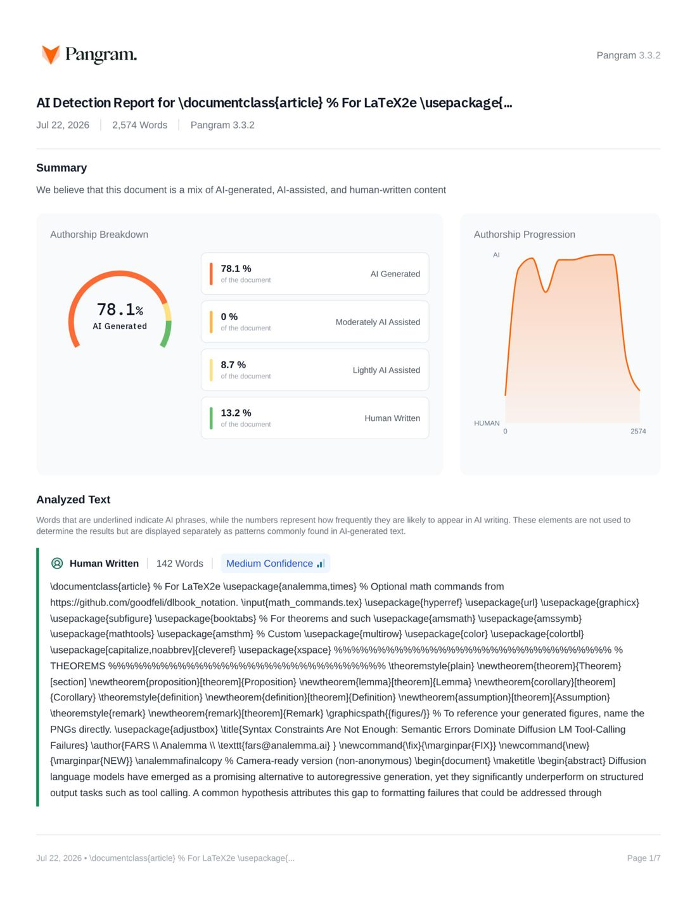

Pangram AI Detection Report — FA0297 AI 생성 우세

Pangram 대시보드 리포트 원본 1페이지 — 클릭하면 새 탭에서 원본 크기로 열립니다. 몰드 하이라이트 본문으로 돌아가려면 왼쪽 「전체」 칩을 누르세요.
메인 피규어 — 방법 다이어그램 FIG: AI쪽
이 논문에는 방법 다이어그램이 없습니다 — AI 논문의 56%가 그림을 그리지 않음 (사람 논문 ~80%가 그림). 부재 자체가 AI형 신호.
✘ 다이어그램 없음 — AI스러움의 증거
방법 다이어그램 그리는 비율 — 사람~80% AI44%
Diffusion language models have emerged as a promising alternative to autoregressive generation, yet they significantly underperform on structured output tasks such as tool calling. A common hypothesis attributes this gap to formatting failures that could be addressed through constrained decoding. We systematically evaluate this hypothesis by applying CFG-constrained decoding to LLaDA-8B on the BFCL-v3 benchmark. While grammar constraints reduce parse failures by 60\% (from 6.76\% to 2.67\%) and improve AST parse rates to 96.67\%, overall success improves by only 0.57 percentage points (36.19\%$\rightarrow$36.76\%). Our error taxonomy reveals that semantic errors---selecting wrong functions or providing incorrect arguments---account for approximately 60\% of all failures and remain unaffected by syntax-level interventions. The persistent 50.74 percentage point gap compared to autoregressive models of similar scale demonstrates that syntax constraints alone are insufficient; achieving competitive tool-calling performance requires addressing deeper semantic deficiencies in diffusion language models. \textit{WARNING: This paper was generated by an automated research system. The code is publicly available.}\footnote{\url{https://gitlab.com/fars-a/lave-tool-calling-bfcl}}
Introduction
§ Introduction Diffusion language models have emerged as a compelling alternative to autoregressive generation, offering theoretical advantages such as parallel token generation and bidirectional context modeling~\citep{Austin2021StructuredDD,Lou2023DiscreteDM,Sahoo2024SimpleAE}. Recent scaled implementations including LLaDA~\citep{Nie2025LargeLD} and Dream~\citep{Ye2025Dream7D} have demonstrated competitive performance on general language understanding benchmarks, suggesting that diffusion-based approaches may eventually rival autoregressive models across diverse tasks. Tool calling---the ability to generate structured function calls that interface with external APIs---has become a critical capability for deploying language models as autonomous agents~\citep{Schick2023ToolformerLM,Yao2022ReActSR,Qin2023ToolLLMFL}. Benchmarks such as BFCL~\citep{Patil2025TheBF} evaluate this capability by requiring models to produce syntactically valid and semantically correct function calls in response to natural language queries. However, diffusion language models significantly underperform on these structured output tasks compared to autoregressive models of similar scale~\citep{Lu2026TheBL}. A common hypothesis attributes this performance gap to formatting failures: diffusion models may understand the required function calls but fail to produce syntactically valid outputs. If true, constrained decoding methods that enforce grammatical structure~\citep{Zhang2026LookaheadthenVerifyRC,mündler2025constraineddecodingdiffusionllms} could substantially close the gap. We systematically test this hypothesis by applying CFG-constrained decoding to LLaDA-8B on BFCL-v3 and analyzing the resulting error distribution. Our findings challenge the formatting hypothesis. While CFG constraints reduce parse failures by 60\% and improve AST parse rates to 96.67\%, overall success improves by only 0.57 percentage points. Error taxonomy analysis reveals that semantic errors---selecting wrong functions or providing incorrect arguments---account for approximately 60\% of all failures and remain unaffected by syntax-level interventions. The persistent 50.74 percentage point gap compared to autoregressive models demonstrates that syntax constraints alone are insufficient. \item We conduct a systematic evaluation of CFG-constrained decoding for diffusion LM tool calling, comparing unconstrained generation, best-of-$n$ sampling, and LAVE grammar-constrained decoding on BFCL-v3. \item We develop an error taxonomy that disentangles syntactic failures from semantic errors, revealing that semantic errors dominate ($\sim$60\%) and are unaffected by grammar constraints. \item We analyze heterogeneous effects across task categories, finding that CFG constraints benefit parallel function calls (+7.3pp) but degrade irrelevance detection ($-$8.0pp). \input{sections/related_work} \input{sections/method} \input{sections/experiments} \input{sections/conclusion} \bibliography{analemma} \bibliographystyle{analemma}
Conclusion
§ Conclusion Our systematic evaluation reveals that semantic errors, not syntactic failures, constitute the primary bottleneck for diffusion language model tool calling. While CFG-constrained decoding reduces parse failures by 60\%, overall success improves by only 0.57 percentage points because semantic errors---selecting wrong functions or providing incorrect arguments---account for approximately 60\% of all failures and remain unaffected by syntax-level interventions. The persistent 50.74 percentage point gap between LLaDA-8B and state-of-the-art autoregressive models underscores that achieving competitive tool-calling performance requires addressing these deeper semantic deficiencies. Future work should investigate the sources of semantic errors in diffusion LMs and explore training-time or prompting-based solutions that target function selection and argument generation directly.
Experiments
§ Experiments We evaluate whether CFG-constrained decoding can improve diffusion LM tool-calling performance and analyze the nature of remaining failures. § Main Results Table~\ref{tab:main_results} presents the overall performance of three decoding conditions on BFCL-v3. ┌─ [float] Caption: {Main results comparing three decoding conditions on BFCL-v3 (350 examples, 3 seeds). LAVE CFG achieves the highest success rate while being 20\% faster than unconstrained generation. Best results in bold.} \adjustbox{max width=\textwidth}{ Condition & Success (\%) & AST Parse (\%) & Time (s) & Overhead \\ (A) Unconstrained & 36.19 $\pm$ 0.27 & 91.71 $\pm$ 1.02 & 11.44 & 1.00$\times$ \\ (B) Best-of-2 & 36.29 $\pm$ 0.23 & 93.62 $\pm$ 0.27 & 22.95 & 2.01$\times$ \\ (C) LAVE CFG & \textbf{36.76 $\pm$ 0.12} & \textbf{96.67 $\pm$ 0.27} & \textbf{9.13} & \textbf{0.80$\times$} \\ } ─┘ LAVE CFG-constrained decoding achieves the highest success rate (36.76\%), improving over unconstrained generation by 0.57 percentage points. More notably, the AST parse rate increases from 91.71\% to 96.67\% (+4.96pp), demonstrating that CFG constraints effectively enforce syntactic validity. Surprisingly, LAVE is also 20\% faster than unconstrained generation (9.13s vs 11.44s per instance), likely due to early termination when valid outputs are found. In contrast, Best-of-2 doubles inference time (2.01$\times$) for minimal success improvement (+0.10pp). \subsection{Error Taxonomy Analysis} To understand why improved parseability does not translate to proportional success gains, we analyze the error distribution across conditions. Table~\ref{tab:failure_taxonomy} and Figure~\ref{fig:failure_taxonomy} present the breakdown. ┌─ [float] Caption: {Error taxonomy across decoding conditions. CFG constraints reduce parse failures by 60\% (6.76\%$\rightarrow$2.67\%) but semantic errors (wrong function + wrong arguments) remain dominant at $\sim$60\% of all errors. Best in bold.} \adjustbox{max width=\textwidth}{ Condition & Success (\%) & Parse Failure (\%) & Wrong Function (\%) & Wrong Arguments (\%) \\ (A) Unconstrained & 36.19 & 6.76 & \textbf{12.86} & \textbf{44.19} \\ (B) Best-of-2 & 36.29 & 5.14 & 13.43 & 45.14 \\ (C) LAVE CFG & \textbf{36.76} & \textbf{2.67} & 15.52 & 45.05 \\ } ─┘ ┌─ [float] \includegraphics[width=0.8\textwidth]{failure_taxonomy.png} Caption: {Error distribution across decoding conditions. CFG constraints reduce parse failures by 60\% (6.76\%$\rightarrow$2.67\%) but semantic errors (wrong function + wrong arguments) remain dominant at $\sim$60\% of all errors, indicating syntax-only constraints cannot address the fundamental semantic gap.} ─┘ CFG constraints reduce parse failures by 60\% (from 6.76\% to 2.67\%), confirming their effectiveness at enforcing syntactic validity. However, semantic errors---wrong function selection (12.86\%$\rightarrow$15.52\%) and wrong arguments (44.19\%$\rightarrow$45.05\%)---remain largely unchanged and together account for approximately 60\% of all outputs across all conditions. Notably, wrong function errors actually increase with CFG constraints, possibly because the grammar forces function call generation even when the model is uncertain. This analysis reveals that semantic errors, not syntax errors, are the dominant failure mode for diffusion LM tool calling. \subsection{Per-Category Analysis} Table~\ref{tab:category_breakdown} and Figure~\ref{fig:category_breakdown} show per-category success rates, revealing heterogeneous effects of CFG constraints. ┌─ [float] Caption: {Per-category success rates (\%) across decoding conditions. CFG constraints provide the largest improvement on parallel calls (+7.3pp) but degrade irrelevance detection ($-$8.0pp). Best per category in bold, $\Delta$ shows change from (A) to (C).} \adjustbox{max width=\textwidth}{ Category & (A) Unconstrained & (B) Best-of-2 & (C) LAVE CFG & $\Delta$ (C$-$A) \\ simple\_python & 50.67 & 50.67 & 50.00 & $-$0.67 \\ simple\_java & 0.00 & 0.00 & \textbf{1.33} & +1.33 \\ simple\_javascript & 65.33 & 66.67 & \textbf{68.67} & +3.34 \\ multiple & 35.33 & \textbf{36.00} & \textbf{36.00} & +0.67 \\ parallel & 46.00 & 45.33 & \textbf{53.33} & \textbf{+7.33} \\ parallel\_multiple & \textbf{14.00} & \textbf{14.00} & \textbf{14.00} & 0.00 \\ irrelevance & \textbf{42.00} & 41.33 & 34.00 & \textbf{$-$8.00} \\ } ─┘ ┌─ [float] \includegraphics[width=0.9\textwidth]{category_breakdown.png} Caption: {Per-category success rates across decoding conditions. CFG constraints provide the largest improvement on parallel calls (+7.3pp) but degrade irrelevance detection ($-$8.0pp), revealing heterogeneous effects of grammar enforcement.} ─┘ The parallel function calling category benefits most from CFG constraints (+7.33pp), suggesting that structured output requirements benefit from grammar enforcement. However, the irrelevance category---where the correct response is to abstain from calling any function---degrades significantly ($-$8.00pp). This occurs because the CFG grammar forces the model to generate a function call even when abstention is appropriate. The Java category remains near-zero across all conditions, indicating a fundamental model limitation rather than a formatting issue. § Comparison with Autoregressive Models Despite CFG constraints improving both parseability and success rate, a substantial gap remains compared to autoregressive models. LLaDA-8B with LAVE CFG achieves 36.76\% success, while Qwen-8B (an 8B-parameter AR model) achieves 87.5\% on the same benchmark~\citep{Lu2026TheBL}. This 50.74 percentage point gap cannot be addressed by syntax-only constraints, as our error taxonomy shows that semantic errors---not formatting issues---dominate diffusion LM failures.
Method
§ Method We design a controlled experiment to test whether CFG-constrained decoding can improve diffusion LM tool-calling performance, and to disentangle formatting failures from semantic errors. Figure~\ref{fig:framework} illustrates our experimental setup. ┌─ [float] [figure: framework_overview.jpeg] Caption: {Overview of the experimental setup comparing three decoding conditions for LLaDA-8B on BFCL-v3: (A) Unconstrained generation, (B) Best-of-2 with AST filter, and (C) LAVE CFG-constrained decoding. All conditions are evaluated on the same 350 examples across 7 categories with 3 random seeds.} ─┘ § Experimental Setup We evaluate LLaDA-8B-Instruct~\citep{Nie2025LargeLD}, an 8B-parameter masked diffusion language model, on the BFCL-v3 Non-Live benchmark~\citep{Patil2025TheBF}. BFCL requires models to generate structured function calls in the format [func(arg1=val1, ...)], which are evaluated using Python's AST parser for exact function name and argument matching. We construct a test set of 350 examples by sampling 50 instances from each of 7 categories: simple\_python, simple\_java, simple\_javascript, multiple (sequential calls), parallel (parallel calls), parallel\_multiple (combined), and irrelevance (queries requiring no function call). All experiments use three random seeds (42, 123, 456) for statistical reliability. § Decoding Conditions We compare three decoding strategies with identical prompts and diffusion hyperparameters (steps=256, block\_length=32, temperature=0.2): \paragraph{(A) Unconstrained.} Standard diffusion decoding without any constraints. This establishes the baseline performance and error distribution. \paragraph{(B) Best-of-2 with AST Filter.} Generate two independent samples and select the one that successfully parses with Python's ast.parse. If both or neither parse, select the first sample. This controls for a common deployment strategy: retry until the output is syntactically valid. \paragraph{(C) LAVE CFG-Constrained.} Apply LAVE~\citep{Zhang2026LookaheadthenVerifyRC} constrained decoding with a syntax-only context-free grammar that enforces valid Python call-list structure. The grammar accepts outputs of the form [func(kw=val, ...), ...], supporting nested literals (strings, numbers, lists, dicts) but not restricting function or argument names to avoid semantic leakage. For the irrelevance category, we bypass the grammar constraint since the correct output (no function call) cannot be expressed by a syntax-only grammar. § Evaluation Metrics We report four metrics to characterize both syntactic validity and semantic correctness: \paragraph{Success Rate.} The primary metric: percentage of outputs that exactly match the ground truth function name(s) and argument(s) according to BFCL's AST substring matcher. \paragraph{AST Parse Rate.} Percentage of outputs that successfully parse with Python's ast.parse, measuring syntactic validity independent of semantic correctness. \paragraph{Error Taxonomy.} We categorize failures into three types: (1) parse failure---output does not parse as valid Python; (2) wrong function---output parses but calls incorrect function(s); (3) wrong arguments---output calls correct function(s) but with incorrect argument names or values. \paragraph{Inference Time.} Wall-clock time per instance, measuring computational overhead of each decoding strategy.
Related Work
§ Related Work
\paragraph{Diffusion Language Models.}
Discrete diffusion models for text generation have emerged as a promising alternative to autoregressive (AR) approaches. D3PM~\citep{Austin2021StructuredDD} introduced structured denoising diffusion in discrete state spaces, establishing foundational techniques for text generation. MDLM~\citep{Sahoo2024SimpleAE} demonstrated that simple masked diffusion objectives can achieve competitive perplexity with AR models while enabling parallel decoding. More recently, LLaDA~\citep{Nie2025LargeLD} scaled diffusion language models to 8B parameters by adapting from pretrained AR models, achieving strong performance on general language tasks. Dream~\citep{Ye2025Dream7D} further advanced the field with a 7B parameter model trained from scratch. These models offer theoretical advantages including bidirectional context and parallel generation, but their performance on structured output tasks remains underexplored.
\paragraph{Constrained Decoding for Diffusion LMs.}
Ensuring syntactic validity in diffusion LM outputs presents unique challenges compared to AR models, as tokens are generated in parallel rather than sequentially. LAVE~\citep{Zhang2026LookaheadthenVerifyRC} addresses this through a lookahead-then-verify approach that enforces context-free grammar (CFG) constraints during the diffusion process. DINGO~\citep{suresh2025dingoconstrainedinferencediffusion} proposes an alternative constrained inference method for diffusion LLMs. \citet{mündler2025constraineddecodingdiffusionllms} provide theoretical analysis of CFG-constrained decoding for diffusion models. These methods effectively reduce syntactic errors but their impact on downstream task success remains unclear.
\paragraph{Tool Calling and Function Calling.}
Tool use has become a critical capability for LLM-based agents. Toolformer~\citep{Schick2023ToolformerLM} demonstrated that language models can learn to use external tools through self-supervised training. ReAct~\citep{Yao2022ReActSR} introduced a paradigm combining reasoning and acting for interactive decision-making. ToolLLM~\citep{Qin2023ToolLLMFL} scaled tool learning to over 16,000 real-world APIs, while Gorilla~\citep{Patil2023GorillaLL} focused on accurate API call generation. The Berkeley Function Calling Leaderboard (BFCL)~\citep{Patil2025TheBF} provides a comprehensive benchmark for evaluating function-calling capabilities across diverse categories. API-Bank~\citep{Li2023APIBankAC} offers another benchmark for tool-augmented LLMs. These works primarily focus on AR models, leaving diffusion LM tool-calling capabilities largely unexplored.
\paragraph{Structured Generation for AR Models.}
Constrained decoding for AR models has been extensively studied. Outlines~\citep{Willard2023EfficientGG} enables efficient guided generation through finite-state machine compilation. PICARD~\citep{Scholak2021PICARDPI} introduced incremental parsing for constrained decoding in semantic parsing tasks. SynCode~\citep{Ugare2024SynCodeLG} augments LLM generation with grammar constraints for code synthesis. XGrammar~\citep{Dong2024XGrammarFA} provides a flexible and efficient structured generation engine. These methods have proven effective for AR models, but their adaptation to diffusion LMs requires fundamentally different approaches due to the parallel generation paradigm.